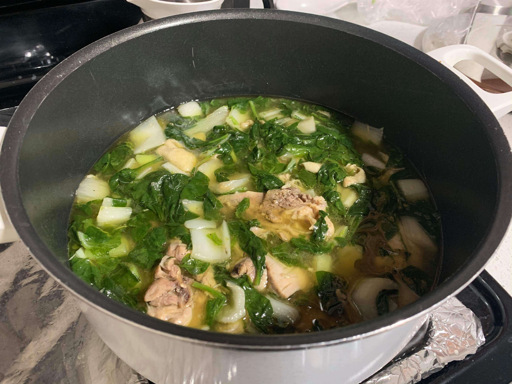

Tinola

Ingredients:
- 3 lb Chicken legs and thighs
- 1 tbsp Canola oil
- 1 Onion, sliced
- 3 cloves Garlic, minced
- 3 inch Ginger, sliced
- 3 tbsp Fish sauce
- 5 cups Water
- 1 Chayote, cut into wedges
- 1/2 lb Spinach
- 1 Bok Choy, chopped
- Salt
- Pepper
Instructions:
- Heat the oil in a pot over medium heat. Sauté the onions, garlic, and ginger until the onions become translucent.
- Add chicken and cook, stirring occasionally, for about 5 to 7 minutes or until chicken starts to change color.
- Add the fish sauce and cook, stirring occasionally, for 1 to 2 minutes.
- Add the water and bring to a boil. Lower the heat to a simmer and let cook, covered, for 35 minutes.
- Add in the chayote and let cook for 5 minutes.
- Season with salt and pepper to taste.
- Add spinach and bok choy and cook until wilted.